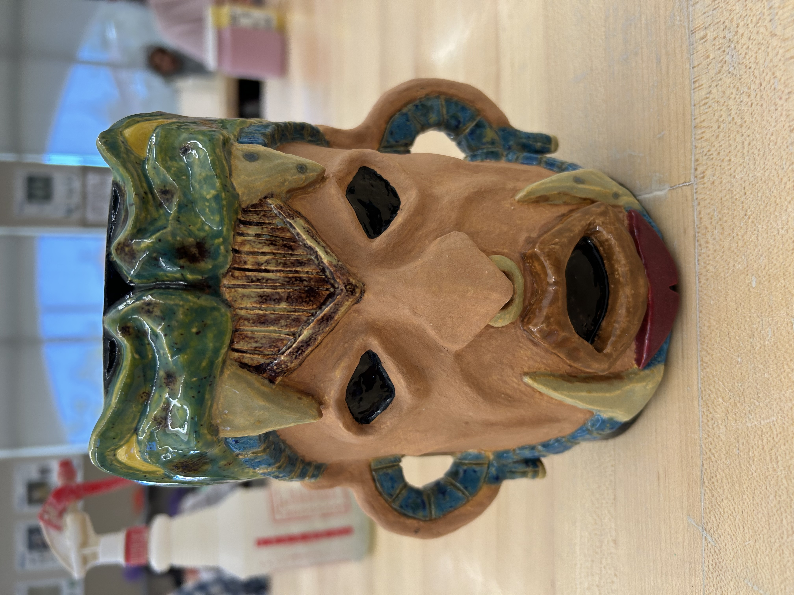
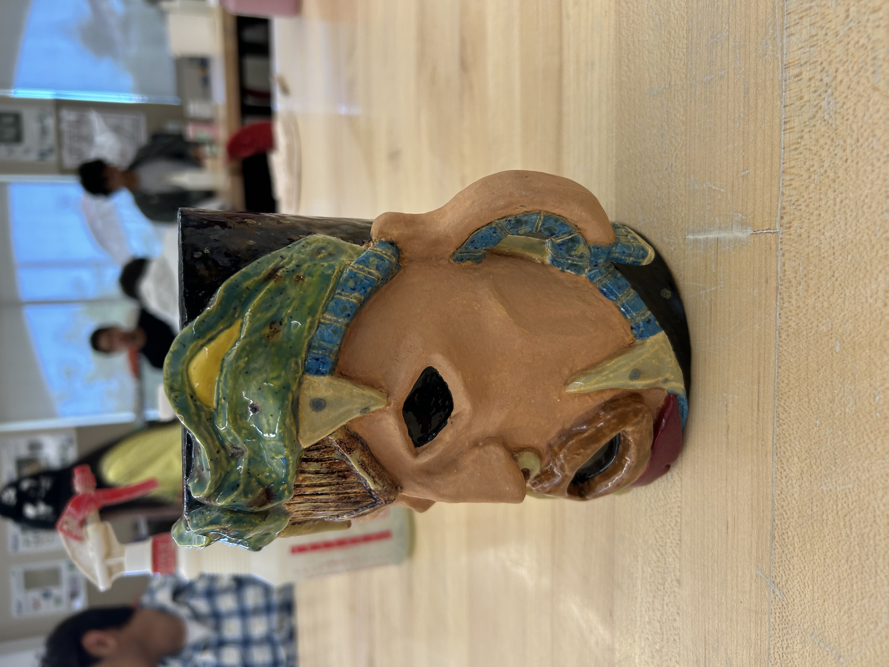

Mug


(May 22, 2025)
This was a mug i made for ceramics during highschool. It was supposed to be any face you wanted to make, ideally a tikki mug. I decided to do one that resembled aztec masks. the mug features a face with a snake as a mask on him.